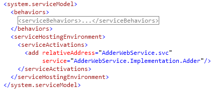

Web Services in .NET
This tutorial describes how to create and access Web services from .NET 4.0. Visual Studio 2010 is required.
- Creating a Web Service.
- Accessing a Web Service.
A. Creating a WCF Web Service Application
- Create a new "WCF Service Application" project ("Visual C# > WCF").
- With this project type, the WCF service will be deployed on a web server as a web service. The wizard creates some sample files demonstrating the general structure of a WCF service.
- In order to start from scratch, delete the following generated files from the project: IService1.cs and Service1.svc. You can also delete the special Debug and Release configuration files which can be found under the Web.config node (do not delete Web.config itself).
- Adding a service to the application requires the following artifacts:
- A service contract in the form of an interface annotated with [ServiceContract] whose methods are annotated with [OperationContract].
- A class implementing this interface.
- Open the file Web.config and locate the XML node serviceHostingEnvironment (child of system.serviceModel). Add a child node serviceActivations under this node. For each service, a child node under serviceActivations like the following is required: <add service="#1" relativeAddress="#2"/>
Replace #1 with the namespace qualified name of the implementation class. Replace #2 with a name ending with ".svc". The service will be accessible under the address http://localhost:XXXX/#2.svc (append ?wsdl to retrieve the WSDL).
Instead of step 3, you can also use a .svc-file (see the output of the wizard from step 1).

B. Accessing a Web Service from .NET
The following applies regardless of the language in which the Web service is implemented.
- To access a Web service from any project type, right-click on the project and select "Add Service Reference...".
- Enter the URL of the WSDL under "Address" and click "Go".
- Define a "Namespace" and click "OK".
- The tool will generate several classes. Use the client class to access the Web service.
Please send questions and comments regarding this tutorial to Claus Alexander Usener.